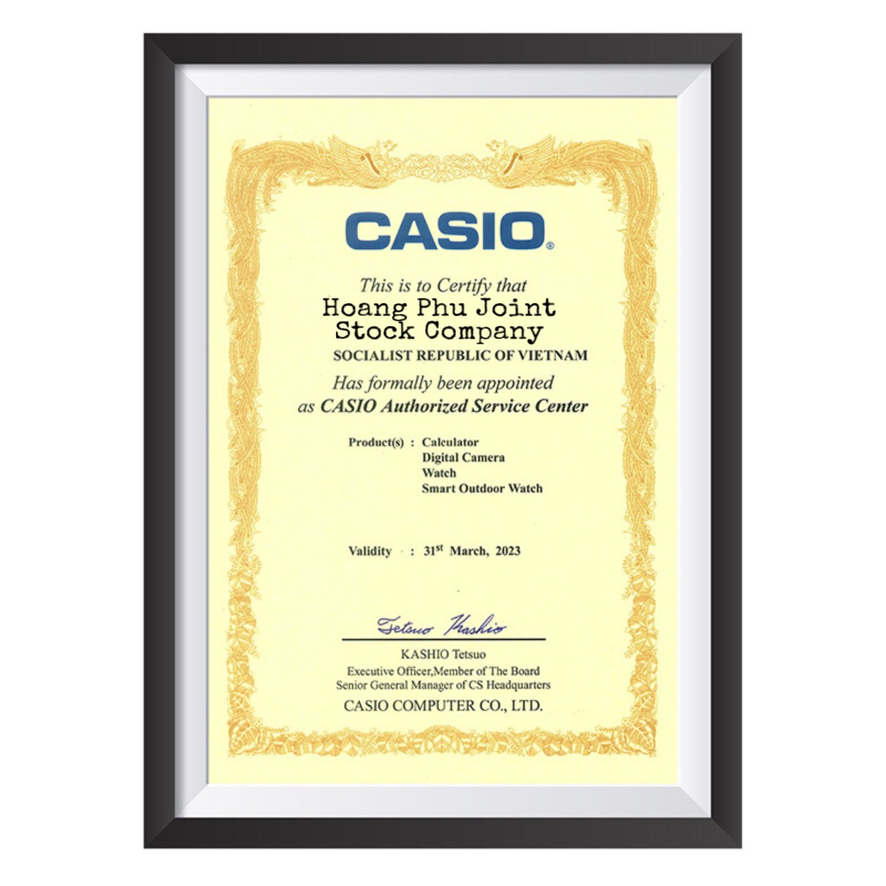

Trung tâm bảo hành đồng hồ Casio ở đâu, có bao nhiêu trung tâm bảo hành đồng hồ Casio chính hãng và quy trình tiếp nhận bảo hành như thế nào?
Những điều cần biết về Trung tâm bảo hành đồng hồ Casio chính hãng
Casio có hệ thống bảo hành quốc tế cho các dòng sản phẩm như đồng hồ G-Shock, đồng hồ Baby-G, đồng hồ Edifice. Vậy Trung tâm bảo hành của Casio tại Việt Nam ở đâu, có bao nhiêu điểm bảo hành Casio chính hãng và quy trình tiếp nhận bảo hành như thế nào? Hãy cùng tìm hiểu qua bài viết sau đây!
THẾ NÀO LÀ BẢO HÀNH CHÍNH HÃNG?
Bảo hành chính hãng là dịch vụ bảo hành của nhà sản xuất dành cho các sản phẩm của họ được phân phối và bán trên thị trường. Bảo hành chính hãng áp dụng cho những sản phẩm được nhập khẩu chính hãng, có đầy đủ giấy tờ bảo hành của hãng hoặc của các đơn vị phân phối, đại lý...
Trung tâm bảo hành chính hãng đồng hồ Casio tại Việt Nam
Bảo hành chính hãng được dùng để phân biệt với bảo hành tại công ty, cửa hàng. Bảo hành tại công ty là chính sách bảo hành của điểm bán sản phẩm, không liên quan đến hãng sản xuất. Nhiều điểm bán chỉ có bảo hành công ty/cửa hàng mà không có bảo hành chính hãng là do sản phẩm của họ không phải là sản phẩm chính hãng, hoặc là sản phẩm được làm giả/nhái. Vì thế, khách hàng cần kiểm tra chế độ bảo hành của sản phẩm chính hãng trước khi mua để tránh mua phải hàng không chính hãng và không được bảo trợ từ nhà sản xuất.
VÌ SAO NÊN SỬ DỤNG DỊCH VỤ BẢO HÀNH CHÍNH HÃNG?
- Thứ nhất, bảo hành chính hãng mang lại sự an tâm cho người sử dụng. Khách hàng sẽ không phải lo lắng sản phẩm của mình có bị tráo đổi linh kiện hay bị giảm chất lượng sau khi sửa chữa hay không. Vì hãng chính là nơi chịu trách nhiệm cao nhất cho chất lượng của sản phẩm chính hãng trên thị trường.
- Thứ hai, bảo hành chính hãng sử dụng các linh kiện chính hãng từ nhà sản xuất. Thậm chí, nhiều linh kiện không thể tìm thấy ở bất kỳ nơi nào khác trên thị trường. Điều này nhằm đảm bảo chất lượng và tuổi thọ của sản phẩm chính hãng sau khi bảo hành, vì nếu sử dụng các linh kiện thay thế kém chất lượng sẽ khiến sản phẩm chính hãng nhanh hư, hoạt động không tốt như trước.
- Thứ ba, trong trường hợp không may, khách hàng mua phải sản phẩm bị lỗi kỹ thuật không thể khắc phục được, nếu có bảo hành chính hãng thì khách hàng sẽ được đổi sản phẩm mới.
- Thứ tư, các hạng mục bảo hành miễn phí/tính phí luôn được niêm yết rõ ràng theo giá từ hãng nên khách hàng hoàn toàn yên tâm sẽ không bị “hét giá”. Bảo hành chính hãng phụ trách chăm sóc sản phẩm trọn đời.
TRUNG TÂM BẢO HÀNH ĐỒNG HỒ CASIO TẠI VIỆT NAM
Tuy không có chi nhánh hay công ty con tại Việt Nam, song Casio vẫn có Trung tâm bảo hành tiếp nhận bảo hành và sửa chữa đồng hồ Casio chính hãng cho khách hàng trong nước và quốc tế. Các Trung tâm bảo hành đồng hồ Casio chính hãng này được thành lập và quản lý bởi đại diện phân phối ủy quyền chính thức của Casio tại Việt Nam là Công ty Cổ phần Hoàng Phú Watch. Tất cả các hoạt động, sự kiện của Casio tại Việt Nam cũng được thực hiện thông qua Hoàng Phú Watch.
Chứng nhận trung tâm bảo hành đồng hồ Casio chính hãng tại Việt Nam
Hiện tại, hệ thống trung tâm bảo hành đồng hồ Casio chính hãng tại Việt Nam đã có đến 7 địa điểm, tập trung ở các thành phố lớn như Hà Nội, Đà Nẵng, TP.HCM, Cần Thơ. Các trung tâm này sẽ tiếp nhận sản phẩm cần bảo hành, thay pin từ mọi khu vực với số lượng lên đến hàng trăm khách hàng mỗi ngày. Vậy có gì bên trong các Trung tâm bảo hành đồng hồ Casio này?
- Trang thiết bị hiện đại: Tất cả các sản phẩm đồng hồ Casio chính hãng đều sử dụng máy Quazt với độ chính xác cao, sai số cực thấp. Vì thế, Casio Anh Khuê cũng tập trung trang bị các thiết bị tiên tiến được nhập khẩu từ nước ngoài nhằm phục vụ cho việc sửa chữa đồng hồ Quazt. Một số thiết bị có thể kể đến như:
+ Máy đo năng lượng pin và IC Witschi: Dùng để đo thông số bộ điện (IC, cuộn dây, mạch điện, bánh xe từ…) hoặc bộ cơ (bánh răng), pin… để xác định nguyên nhân đồng hồ bị chết máy không rõ nguyên nhân.
MÁY ĐO NĂNG LƯỢNG PIN VÀ IC WITSCHI.
+ Kính hiển vi: Những chi tiết hư hỏng nhẹ cũng có thể ảnh hưởng đến hoạt động của bộ máy đồng hồ, đó là lý do vì sao kính hiển vi thường được các Trung tâm sửa chữa đồng hồ chuyên nghiệp sử dụng.
+ Máy vệ sinh đồng hồ: Loại máy này giúp làm sạch bụi bẩn và những vết gỉ sét bám trên đồng hồ, trả lại sản phẩm một diện mạo như mới.
+ Máy điều áp chân không: Một trong những tính năng độc đáo của đồng hồ Casio đó chính là khả năng chống nước (Water Resistance), nhiều dòng sản phẩm còn có chỉ số chống nước tới 20ATM (tương đương 200 mét). Sau khi đồng hồ Casio được tháo rời để sửa chữa hoặc thay pin, vệ sinh, chúng cần được kiểm tra lại khả năng chống nước. Việc này sẽ được thực hiện bằng cách sử dụng máy điều áp chân không. Loại máy này sẽ tạo ra một mức áp suất để kiểm tra khả năng chống nước của đồng hồ đạt đến mức độ nào. Tất cả đồng hồ Casio được mang đến bảo hành đều phải trải qua kiểm nghiệm này trước khi bàn giao lại cho khách hàng.
MỘT SỐ THIẾT BỊ TẠI TRUNG TÂM BẢO HÀNH ĐỒNG HỒ CASIO.
+ Bên cạnh những thiết bị chính này thì Trung tâm bảo hành đồng hồ Casio chính hãng còn được trang bị nhiều bộ dụng cụ và thiết bị chuyên nghiệp để phục vụ cho nhu cầu bảo hành, sửa chữa đồng hồ Casio tại Việt Nam.
- Đội ngũ kỹ thuật viên giỏi: Đồng hành với các trang thiết bị hiện đại chính là đội ngũ kỹ thuật viên sửa chữa đồng hồ chuyên nghiệp, tận tâm. Các nhân viên Trung tâm bảo hành Casio cũng thường xuyên được tham gia các lớp tập huấn về sản phẩm và đào tạo nâng cao tay nghề, nhằm mang lại sự hài lòng và đưa Trung tâm trở thành sự lựa chọn đáng tin cậy dành cho các khách hàng Casio trên cả nước, ngay cả khi đồng hồ đã hết thời gian bảo hành.
- Dịch vụ thân thiện: Trung tâm bảo hành Casio lấy sự hài lòng của khách hàng làm thước đo tiêu chuẩn và đánh giá nhân viên. Chính vì thế, hầu hết các khách hàng đều bày tỏ sự hài lòng sau khi sử dụng dịch vụ. Phương châm của Trung tâm chính là: Không để khách chờ lâu, Tư vấn dịch vụ rõ ràng, thái độ đúng chuẩn mực và Phục vụ bằng sự chân thành. Hotline 0916 12 17 19 luôn sẵn sàng tiếp nhận mọi khiếu nại, phàn nàn từ khách hàng để có biện pháp xử lý sớm nhất.
BÊN TRONG PHÒNG LÀM VIỆC CỦA MỘT TTBH CASIO.
- Linh kiện thay thế chính hãng: Tất cả các linh kiện thay thế cho đồng hồ Casio đều được nhập khẩu trực tiếp từ nhà sản xuất Casio. Những linh kiện này không được bán công khai trên thị trường. Nên để đảm bảo đồng hồ chính hãng được thay đúng linh kiện chính hãng, bạn cần phải đem đồng hồ đến các Trung tâm bảo hành Casio Anh Khuê Watch.
QUY ĐỊNH VỀ THỜI GIAN VÀ ĐIỀU KIỆN BẢO HÀNH
Tùy theo từng dòng sản phẩm mà thời gian bảo hành đồng hồ Casio cũng khác nhau:
- Đồng hồ G-Shock và Baby-G: Bảo hành 5 năm cho cả máy và pin.
- Đồng hồ Casio các dòng còn lại: Bảo hành 12 tháng cho máy và 18 tháng cho pin. Riêng đồng hồ để bàn và đồng hồ treo tường chỉ bảo hành máy, không bảo hành pin.
ĐIỀU KIỆN BẢO HÀNH:
- Bảo hành không tính phí:
+ Sản phẩm còn trong thời gian bảo hành. Thời gian bảo hành sẽ được tính từ ngày mua được ghi trên phiếu bảo hành.
+ Sản phẩm bảo hành phải có đầy đủ giấy tờ bảo hành, nguyên vẹn và không được tẩy xóa.
Đối với các sản phẩm vẫn còn trong thời hạn bảo hành Nếu khách gửi bảo hành/sửa chữa tại cửa hàng thì các chi phí vận chuyển từ cửa hàng => TTBH và ngược lại thì công ty chịu phí.
Trong thời gian bảo hành chi phí vận chuyển từ TTBH => nhà khách hàng và ngược lại thì công ty chịu phí.
- Bảo hành có tính phí:
+ Đồng hồ Casio chính hãng hết thời hạn bảo hành theo quy định.
+ Đồng hồ Casio chính hãng của khách hàng là người nước ngoài.
+ Đồng hồ còn đang trong thời gian bảo hành nhưng bị hư hỏng do các nguyên nhân như sử dụng sai hướng dẫn, bấm nút điều chỉnh đồng hồ trong môi trường nước, trầy xước mặt kính, vỏ, khóa, dây đeo xỉn màu,…
+ Mọi hư hỏng của đồng hồ do tự ý sửa chửa hoặc do sửa chửa không đúng cách từ các dịch vụ khác không phải do TTBH chính hãng cũng bị tính phí. Mức phí sửa chửa và giá các linh kiện thay thế sẽ được thông báo cho khách hàng trước khi tiến hành sửa chửa, thay thế.
- Đồng hồng Casio giả, nhái không được bảo hành.
Đối với các sản phẩm KHÔNG còn trong thời hạn bảo hành khách gửi bảo hành/sửa chữa tại cửa hàng thì khách hàng chịu phí.
DANH SÁCH TRUNG TÂM BẢO HÀNH ĐỒNG HỒ CASIO CHÍNH HÃNG TRÊN TOÀN QUỐC
Mọi thông tin liên hệ Phòng bảo hành đồng hồ Casio chính hãng:
- Hotline Phòng Bảo Hành: 1900.866.858 (Phím 4)
- Hệ thống trung tâm bảo hành đồng hồ Casio chính hãng tại Hà Nội:
+ Trung tâm bảo hành Casio số 1: Số 15 Ô Chợ Dừa, P. Ô Chợ Dừa, Quận Đống Đa. Điện thoại: (024) 3223 2229
+ Trung tâm bảo hành Casio số 2: 128 Bạch Mai, P. Cầu Dền, Quận Hai Bà Trưng, TP Hà Nội. Điện thoại: (0243) 624 5647
- Hệ thống trung tâm bảo hành đồng hồ Casio chính hãng tại Đà Nẵng:
+ Trung tâm bảo hành Casio số 1: Số 140 Nguyễn Văn Linh, Quận Hải Châu, TP. Đà Nẵng. Điện thoại: (0236) 366 4789
Hệ thống trung tâm bảo hành đồng hồ Casio chính hãng tại Đà Nẵng
- Hệ thống trung tâm bảo hành đồng hồ Casio chính hãng tại TP. Hồ Chí Minh:
+ Trung tâm bảo hành Casio số 1: Số 437 Lý Thái Tổ, Phường 9, Quận 10. Điện thoại: (028) 3927 3778 - (028) 3927 3779
+ Trung tâm bảo hành Casio số 2: Số 295 Trần Hưng Đạo, P. Cô Giang, Quận 1. Điện thoại: (028) 3836 1562
+ Trung tâm bảo hành Casio số 3: Lầu 2, Số 20 đường Ba Tháng Hai, P. 12, Quận 10. Điện thoại: (028) 3927 0317 - (028) 3927 3517
Hệ thống trung tâm bảo hành đồng hồ Casio chính hãng tại TP. Hồ Chí Minh
- Hệ thống trung tâm bảo hành đồng hồ Casio chính hãng tại Cần Thơ:
+ Trung tâm bảo hành Casio số 1: Số 56 Trần Văn Khéo, Phường Cái Khế, Quận Ninh Kiều. Điện thoại: (0292) 3760 630
Phòng bảo hành làm việc vào giờ hành chính: Thứ 2 – Thứ 6 (8h00 – 17h00) và thứ 7 (8h00 – 12h00).
Hệ thống trung tâm bảo hành đồng hồ Casio chính hãng tại Cần Thơ
QUY TRÌNH TIẾP NHẬN VÀ BÀN GIAO SẢN PHẨM BẢO HÀNH
- Đối với khách hàng đến bảo hành trực tiếp tại TTBH Casio:
+ Khách hàng mang đồng hồ Casio cần được bảo hành cùng phiếu bảo hành (nếu đang trong thời gian bảo hành) đến các địa điểm trung tâm bảo hành gần nhất.
+ Bộ phận lễ tân sẽ tiếp nhận, kiểm tra giấy tờ và ghi nhận vấn đề cần bảo hành sau đó chuyển đến các kỹ thuật viên kiểm tra.
+ Sau khi kiểm tra xong, khách hàng sẽ nhận được thông báo chi tiết về tình trạng của đồng hồ và báo giá (nếu có tính phí). Khách hàng đồng ý sửa chữa thì TTBH sẽ tiếp nhận và bắt đầu tiến hành sửa chữa.
Tùy theo thời gian sửa chữa mà khách hàng sẽ được thông báo đợi lấy đồng hồ hoặc có giấy hẹn ghi thời gian cụ thể để lên nhận lại sản phẩm. Với các trường hợp bảo hành như thay pin hay đánh bóng thì khách hàng chỉ cần đợi khoảng 30 phút.
Khách hàng có thể đến bảo hành đến trực tiếp hoặc thông qua cửa hàng Casio Anh khuê.
- Đối với khách hàng ở xa:
+ Khách hàng sẽ có 2 cách gửi sản phẩm cần bảo hành đến TTBH Casio:
1. Mang ra cửa hàng Hoàng Phú Watch gần nhất (nếu mua ở đại lý thì mang đến đại lý), nhân viên bán hàng sẽ ghi nhận và gửi sản phẩm cần bảo hành về TTBH Casio.
2. Gửi trực tiếp qua đường bưu điện về địa chỉ TTBH Casio gần nhất, kèm với phiếu bảo hành sản phẩm.
+ Sau khi nhận được sản phẩm cần bảo hành, nhân viên TTBH Casio sẽ liên hệ trực tiếp với khách hàng.
+ Sản phẩm được bảo hành xong sẽ gửi trả khách hàng theo đường bưu điện hoặc cửa hàng mà khách gửi.
Mọi thắc mắc, vấn đề cần tư vấn, khách hàng có thể liên hệ trực tiếp thông qua số điện thoại của các Trung tâm bảo hành đồng hồ Casio ở trên hoặc qua Hotline Phòng Bảo Hành: 1900.866.858 (Phím 4).